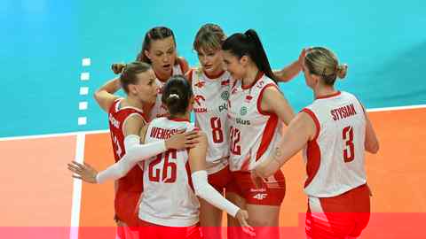

Koszalin · ostatni test przed EuroVolley (start 21.08, za 8 dni). Źródła: Polsat Sport, sport.pl, siatka.org, Volleyball World, CEV.

Drugi mecz, drugi sweep. I i III set pod kontrolą; jedyny opór Francji to 28:26 w drugim. To nadal Francja z Memoriału — nie elita. Oficjalnego boxscore’u indywidualnego PZPS, Polsat i sport.pl nie opublikowały: bez zgadywania punktów.
Polsat Sport 2 · Polsat Sport Extra 2 · Polsat Box Go
To inny test niż Ukraina i Francja. Włochy to mistrzynie świata i igrzysk. 26.07 w Makau wzięły brąz VNL: ITA–CHN 3:1 (25:16, 23:25, 25:22, 25:13), Antropova 26 pkt — Volleyball World.
Klucze dla Polski: jakość serwisu, ściana w środku, czy Jurczyk/Obiała wytrzymają tempo elity. Włochy 2–0 w Memoriale (FRA 3:0, UKR 3:1) — jedyny stracony set to I vs Ukraina.
Typ: Włochy lekkim faworytem. Pięć setów jest realistyczne.
Pytanie na wieczór: która siódemka wygląda najlepiej na elitę — ta z wczoraj, czy Lavarini miesza?
Źródła: Polsat Sport, Volleyball World, siatka.org.
| # | Drużyna | M | W | P | Sety |
|---|---|---|---|---|---|
| 1 | Polska | 2 | 2 | 0 | 6:0 |
| 2 | Włochy | 2 | 2 | 0 | 6:1 |
| 3 | Francja | 2 | 0 | 2 | 0:6 |
| 4 | Ukraina | 2 | 0 | 2 | 1:6 |
Doniesienie medialne Loveth Omoruyi zniesiona na noszach vs Ukraina. Brak diagnozy FIPAV — nie podajemy skali urazu.
Pool A, Stambuł: Turcja, Łotwa, Polska, Niemcy, Słowenia, Węgry.
Pierwszy mecz: Polska – Węgry, 22.08, 19:00 czasu lokalnego = 18:00 Warszawa. Wylot kadry: 19.08.
VNL 2026: Polska 8. miejsce fazy wstępnej, 7–5, 20 pkt meczowych. Do Final 8 nie weszła — Chiny 9. (6–6) dostały slot gospodarza. Źródło: CEV / VW.
Po grupie 5–0 (sety 15:3) przyszedł zimny prysznic. R16: 19:25, 21:25, 25:10, 23:25.
VW: Lange 16, Jakubowska 13, Wika 12. Po drugiej stronie Ajchua 25. Czwartek — dzień wolny, bez kolejnego meczu.
Źródło: Volleyball World. Nie mylić z innymi parami 1/8.
W grze Łunio / Kruczek: 0:2 Lazarenko/Kurnikova UA (11:21, 14:21), potem 2:0 Vergara/González ES (21:17, 21:12).
Poza turniejem Jundziłł/Jaroszczak · Kropidłowska/Łodej · Michalska/Okła · Kielak/Kudlik.
TV dziś od 8:55: Polsat Sport Extra 3 + Polsat Box Go
Źródła: CEV / Polsat Sport.
Superpuchar AL-KO: 24.10.2026, 14:45, Częstochowa — Budowlani – DevelopRes.
Potwierdzone #VolleyWrocław przedłużył kontrakt Sary Wąsiakowskiej (9.08, klub).
Plotka Gilson (BEL) w kolumnie „w kręgu zainteresowań” Wrocławia na siatka.org; Volleybox trzyma ją w Beveren. Stautz → Wrocław: prasa DE, bez komunikatu klubu.
Wczoraj w siódemce vs Francja. Dziś prawdziwy egzamin: blok i tempo na Włoszkach. Jeśli ściana w środku nie złapie rytmu, Polska odda inicjatywę już w przyjęciu.
Pierwsze skrzydło przy Grabce. Sport.pl: punktowała z ataku i bloku, Francja nie miała pomysłu. Oficjalnych punktów z tego meczu brak — nie dopisujemy boxscore’u.
Lavarini sprawdza ją jako realną opcję na elitę. Dziś vs Włochy widać, czy to forma, czy tylko Francja.